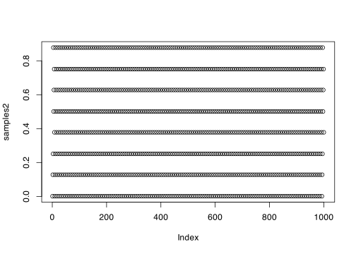

This is Problem Sheet 2, which covers material from Lectures 7 to 11. You should work through all the questions on this problem sheet in advance of the problems class, which takes place in the lecture of Thursday 31 October. If you are stuck on any of the questions, you are welcome to discuss them with me in my office hours on Mondays at 1500.
This problem sheet is to help you practice material from the module. It is not for assessment and will not be marked.
Full solutions should be released on Friday 1 November.
(a) Suppose it is desired to estimate the value of an integral \[ \theta = \int_0^1 h(x)\,\mathrm{d}x \] by Monte Carlo integration
i. By splitting \(h(x) = \phi(x)f(x)\), where \(f\) is a probability density function, describe how the Monte Carlo method of estimating \(\theta\) works.
Solution. As suggested, we have \[ \theta = \int_0^1 h(x)\,\mathrm{d}x = \int_0^1 \phi(x)\,f(x)\,\mathrm{d}x = \Exg \phi(X) ,\] where \(X\) is a random variable with PDF \(f\). To estimate this, we sample \(X_1, \dots, X_n\) from \(X\), and use \[ \widehat\theta_n^{\mathrm{MC}} = \frac{1}{n} \sum_{i=1}^n \phi(X_i) . \]
ii. Let \(\widehat\theta_n\) be the Monte Carlo estimate based on \(n\) simulations. Find the expectation and variance of \(\widehat\theta_n\), as a function of \(n\).
Solution. As in lectures, we have \[ \Exg \theta_n^{\mathrm{MC}} = \Ex \left(\frac{1}{n} \sum_{i=1}^n \phi(X_i) \right) = \frac{1}{n}\,n\Exg\phi(X) = \Exg\phi(X) \] and \[ \Var\big((\theta_n^{\mathrm{MC}}\big) = \Var \left(\frac{1}{n} \sum_{i=1}^n \phi(X_i) \right) = \frac{1}{n^2}\,n\Var\big(\phi(X)\big) = \frac{1}{n}\Var\big(\phi(X)\big) . \]
iii. What guidelines can be given for the choice of \(f\) in practice?
Solution. First, \(f\) (or equivalently \(X\)) should be easy to sample from. Second, we want to minimise \(\Var(\phi(X))\), so should pick \(f\) approximately proportional to \(h\), so that \(\phi\) is roughly constant, and therefore has low variance.
In the absence of better options, \(X\) being uniform on \([0, 1]\) (so \(f(x) = 1\) on this interval) is often not a bad choice.
(b) Consider evaluation the integral \[ \int_0^1 x^2\,\mathrm{d}x \] by Monte Carlo integration using \(f(x) = \Ind_{[0,1]}(x)\). Write down the Monte Carlo estimator \(\widehat\theta_n\).
Solution. Since \(f(x) = 1\) on this interval, we must take \(\phi(x) = x^2\). Thus the estimator is \[\widehat\theta_n = \frac{1}{n} \sum_{i=1}^n X_i^2 ,\] where \(X_i \sim \operatorname{U}[0,1]\) are independent.
Explain how antithetic variables can be used in this situation, and justify briefly why their use here is guaranteed to improve efficiency.
Solution. Antithetic variables attempt to reduce the variance in Monte Carlo estimation by using pairs of variables \((X_i, X'_i)\) that both have the same distribution as \(X\), but where \(\phi(X)\) and \(\phi(X')\) are negatively correlated.
In this situation, if \(X_i \sim \operatorname{U}[0,1]\), then \(X'_i = 1 - X_i\) has this same distribution. The corresponding antithetic variable estimator is \[\widehat\theta_n^{\mathrm{AV}} = \frac{1}{n} \sum_{i=1}^{n/2} \big(X_i^2 + (1 - X_i)^2\big) .\]
An anitithetic variables estimator always decreases the variance of a Monte Carlo estimator if the correlation (or, equivalently, the covariance) between \(\phi(X)\) and \(\phi(X')\) is negative. We saw in lectures that, if \(X \sim \operatorname{U}[0,1]\) and \(\phi\) is monotonically increasing, then \(\phi(X)\) and \(\phi(1 - X)\) have negative correlation. Since \(x^2\) is increasing on \([0,1]\), that is the case here.
For \(U \sim \operatorname{U}[0,1]\), use the results \[\Ex U^2 = \tfrac13 \qquad \Ex U^4 = \tfrac15 \qquad \Ex U^2(1-U)^2 = \tfrac{1}{30} \] to find the correlation between \(U^2\) and \((1-U)^2\). Hence, or otherwise, confirm that using antithetic variables reduces the variance of the Monte Carlo estimator by a factor of 8.
Solution. We need to find the correlation between \(U^2\) and \((1 - U)^2\), where \(U \sim \operatorname{U}[0,1]\). The covariance is \[ \operatorname{Cov}\big(U^2, (1-U)^2\big)
= \Ex U^2(1-U)^2 - \big(\Ex U^2\big) \big(\Ex (1-U)^2\big)
= \tfrac{1}{30} - \Big(\tfrac{1}{3}\Big)^2 = -\tfrac{7}{90} .\] The variance are both \[ \Var(U^2) = \Ex U^4 - \big(\Ex U^2\big)^2 = \tfrac15 - \Big(\tfrac{1}{3}\Big)^2 = \tfrac{4}{45} . \] Hence, the correlation is \[ \rho = \operatorname{Corr}\big(U^2, (1-U)^2\big) = \frac{-\frac{7}{90}}{\frac{4}{45}} = -\tfrac78 . \]
The variance of the standard Monte Carlo estimator is \(\frac{1}{n}\Var(\phi(X))\), while the variance of the antithetic variables estimator is \(\frac{1+\rho}{n}\Var(\phi(X))\). So the variance changes by a factor of \(1 + \rho\), which here is \(1 - \frac{7}{8} = \frac{1}{8}\). So the variance reduces by a factor of 8, as claimed.
(You may use without proof any results about the variance of antithetic variable estimates, but you should clearly state any results you are using.)
2. Let \(X \sim \operatorname{N}(0,1)\). Consider importance sampling estimation for the probability \(\theta = \mathbb P(3 \leq X \leq 4)\) using samples \(Y_i\) from the following sample distributions: (i)\(Y \sim \operatorname{N}(1,1)\); (ii)\(Y \sim \operatorname{N}(2,1)\); (iii)\(Y \sim \operatorname{N}(3.5,1)\); (iv)\(Y \sim 3 + \operatorname{Exp}(1)\).
Each of these four distributions gives rise to a different importance sampling method. Our aim is to compare the resulting estimates.
(a) For each of the four methods, estimate the variance \(\Var\big(\frac{f(Y)}{g(Y)}\,\phi(Y)\big)\). Which of these four methods gives the best results?
So our estimate is \(\widehat\theta = 0.00131\). Since the RMSE is three orders of magnitude less than the estimate, so the estimate is probably accurate to a couple of significant figures.
(c) For each of the four methods, approximate how many samples from \(Y\) are required to reduce the root-mean-square error of the estimate of \(\mathbb P(3 \leq X \leq 4)\) to 1%?
Solution. To get the error to 1% means an absolute error of roughly \(\epsilon = 0.01\widehat\theta\). Then we know that the required number of samples is \[ n = \frac{\Var\big(\frac{f(Y)}{g(Y)}\phi(Y)\big)}{\epsilon^2} . \]
(a) Defining any notation you use, write down the basic Monte Carlo estimator \(\widehat\theta_n^{\mathrm{MC}}\) and the importance sampling estimator \(\widehat\theta_n^{\mathrm{IS}}\) for an expectation of the form \(\theta = \Exg \phi(X)\), where \(X\) is a random variable with probability density function \(f\).
What is the advantage of importance sampling over the standard Monte Carlo method?
Solution. The basic Monte Carlo estimator is \[ \widehat\theta_n^{\mathrm{MC}} = \frac{1}{n} \sum_{i=1}^n\phi(X_i) , \] where the \(X_i\) are independent random samples from \(X\).
The basic importance sampling estimator is \[ \widehat\theta_n^{\mathrm{IS}} = \frac{1}{n} \sum_{i=1}^n \frac{f(Y_i)}{g(Y_i)} \,\phi(Y_i) , \] where the \(Y_i\) are independent random samples from a random variable \(Y\) with probability density function \(g\). We must have \(g(y) > 0\) whenever \(f(y) > 0\).
The main advantage of the importance sampling estimator is that can reduce the variance of the estimator by oversampling the most important areas of \(y\), but then downweighting those samples. Another advantage is that importance sampling can be used when it is difficult to sample from \(X\).
(b) Prove that both the basic Monte Carlo and importance sampling estimates from part (a) are unbiased.
Solution. For the standard Monte Carlo estimator, \[ \Exg \theta_n^{\mathrm{MC}} = \Ex \left(\frac{1}{n} \sum_{i=1}^n \phi(X_i) \right) = \frac{1}{n}\,n\Exg\phi(X) = \Exg\phi(X) = \theta .\]
For the importance sampling estimator, first note that \[ \mathbb E \left(\frac{f(Y)}{g(Y)}\,\phi(Y)\right) = \int_{-\infty}^{+\infty} \frac{f(y)}{g(y)}\,\phi(y)\,g(y)\,\mathrm{d}y = \int_{-\infty}^{+\infty} \phi(y) \,f(y) \, \mathrm{d}y = \Exg\phi(X) , \] since \(f\) is the PDF of \(X\). Hence \[ \Exg \widehat\theta_n^{\mathrm{IS}} = \Exg \left(\frac{1}{n} \sum_{i=1}^n \frac{f(Y_i)}{g(Y_i)} \,\phi(Y_i) \right) = \frac{1}{n}\,n\,\Ex \left(\frac{f(Y)}{g(Y)}\,\phi(Y)\right) = \Exg \phi(X) = \theta. \]
Hence, both estimators are unbiased.
(c) Show that the variance of the importance sampling estimator is given by \[ \Var\big(\widehat\theta_n^{\mathrm{IS}}\big) = \frac{1}{n}\int_{-\infty}^{+\infty} \frac{f(y)^2 \phi(y)^2}{g(y)}\,\mathrm{d}y - \frac{1}{n}\big(\Exg \phi(X)\big)^2. \]
(d) Let \(X \sim \operatorname{N}(0,2)\) and \(a \in \mathbb R\). We want to estimate \(\theta = \Ex \big(\sqrt{2}\exp(-(X-a)^2/4)\big)\), using importance sampling with samples \(Y \sim \operatorname{N}(\mu, 1)\) for some \(\mu \in \mathbb R\). Using the result from part (c), or otherwise, show that in the case the variance of the importance sampling estimator \(\widehat\theta_n^{\mathrm{IS}}\) is given by \[ \Var\big(\widehat\theta_n^{\mathrm{IS}}\big) = \frac{\exp(\mu^2 - a\mu) - \theta^2}{n} . \][Note: This equation has changed since an earlier version of the question.]
Solution. It’s clear, using part (c), that it will suffice to show that \[ \int_{-\infty}^{+\infty} \frac{f(y)^2 \phi(y)^2}{g(y)}\,\mathrm{d}y = \exp(\mu^2 - a\mu) . \] Here, we have \[ \begin{align}
f(y) &= \frac{1}{\sqrt{4\pi}} \exp\big(-\tfrac14 y^2 \big) \\
g(y) &= \frac{1}{\sqrt{2\pi}} \exp\big(-\tfrac12 (y-\mu)^2 \big) \\
\phi(y) &= \sqrt{2} \exp\big(-\tfrac14 (y-a)^2 \big) .
\end{align} \] Therefore, by a long and painful algebra slog, we have \[ \begin{align}
\frac{f(y)^2 \phi(y)^2}{g(y)} &= \frac{\frac{1}{4\pi} \exp\big(-\tfrac12 y^2 \big)\times 2\exp\big(-\tfrac12 (y-a)^2 \big)}{\frac{1}{\sqrt{2\pi}} \exp\big(-\tfrac12 (y-\mu)^2 \big)} \\
&= \frac{1}{\sqrt{2\pi}} \exp \Big(-\tfrac12 \big(y^2 + (y-a)^2 - (y-\mu)^2 \big)\Big) \\
&= \frac{1}{\sqrt{2\pi}} \exp \Big(-\tfrac12 \big(y^2 - 2(a - \mu)y + a^2 + \mu^2\big)\Big) \\
&= \frac{1}{\sqrt{2\pi}} \exp \Big(-\tfrac12 \big((y - (a - \mu))^2 - (a- \mu)^2 + a^2 - \mu^2\big)\Big) \\
&= \frac{1}{\sqrt{2\pi}} \exp \Big(-\tfrac12 \big((y - (a - \mu))^2 + 2a\mu - 2\mu^2 \big)\Big) \\
&= \frac{1}{\sqrt{2\pi}} \exp \Big(-\tfrac12 \big(y - (a - \mu)\big)^2\Big)\exp(\mu^2 + a\mu),
\end{align} \] where we ‘completed the square’ on the fourth line. Thus \[ \begin{align}
\int_{-\infty}^{+\infty} \frac{f(y)^2 \phi(y)^2}{g(y)}\,\mathrm{d}y
&= \int_{-\infty}^{+\infty} \frac{1}{\sqrt{2\pi}} \exp \Big(-\tfrac12 \big(y - (a - \mu)\big)^2\Big)\exp(\mu^2 + 2a) \,\mathrm{d}y\\
&= \exp(\mu^2 + 2a) \int_{-\infty}^{+\infty} \frac{1}{\sqrt{2\pi}} \exp \Big(-\tfrac12 \big(y - (a - \mu)\big)^2\Big)\,\mathrm{d}y \\
&= \exp(\mu^2 + a\mu) ,
\end{align} \] since the big integral on the right is the integral of the PDF of a normal \(\operatorname{N}(a-\mu, 1)\) distribution, so equals 1.
Hence, we have proved the result.
For fixed \(n\) and \(a\), find the value of \(\mu\) for which the importance sampling estimator has the smallest mean-square error. Comment on the result.
Solution. Minimising this expression is equivalent to minimising \(\mu^2 + a\mu\). By differentiating with respect to \(\mu\) (or otherwise), we see that this is at \(a = \tfrac12 \mu\).
4. (Answer the following question “by hand”, without using R. You may check your answer with R, if you wish.)
(a) Consider the LCG with modulus \(m = 2^4 = 16\), multiplier \(a = 5\), and increment \(a = 8\). What is the period of this LCG when started from the seed (i)\(x_1 = 1\); (ii)\(x_1 = 2\)?
Solution. For (i), we have \[ \begin{align}
x_1 &= 1 \\
x_2 &= (5 \times 1 + 8) \bmod 16 = 13 \bmod 16 = 13 \\
x_3 &= (5 \times 13 + 8) \bmod 16 = 73 \bmod 16 = 9 \\
x_4 &= (5 \times 9 + 8) \bmod 16 = 53 \bmod 16 = 5 \\
x_5 &= (5 \times 5 + 8) \bmod 16 = 33 \bmod 16 = 1 .
\end{align}\] Here, \(x_5\) is a repeat of \(x_1\), so the period is \(5-1=4\).
For (ii), we have \[ \begin{align}
x_1 &= 2 \\
x_2 &= (5 \times 2 + 8) \bmod 16 = 18 \bmod 16 = 2 .
\end{align}\] This is an immediate repeat, so the period is 2.
(b) Consider the LCG with modulus \(m = 2^4 = 16\), multiplier \(a = 2\), and increment \(c = 4\). Start from the seed \(x_1 = 3\). (i) When do we first see a repeat output? (ii) What is the period?
(i) This does not have full period, so is unlikely to be good PRNG. Let’s check
m <-2^8seed <-1plot(lcg(m, m, 31, 47, seed))
The picture confirms that this does not look random, and in fact has very short period of 16.
(ii) This does have full period, so is a candidate for a good PRNG if the output looks random.
plot(lcg(m, m, 21, 47, seed))
This mostly looks random, but there does appear to be a sort of thick diagonal line in the picture going from bottom left to rop right. I’d might be happy to use this for casual statistical work – the lack of randomness does not seem super-serious – but I would avoid this for cryptographic purposes, for example.
(iii) This does have full period, so is a candidate for a good PRNG if the output looks random.
plot(lcg(m, m, 129, 47, seed))
Even though this has full period, there is a very clear non-random pattern. This is not appropriate for a PRNG.
6. Consider an LCG with modulus \(m = 2^{10} = 1024\), multiplier \(a = 125\), and increment \(c = 5\). Using R:
(a) Generate 1000 outputs in \(\{0, 1, \dots, 1023\}\) from this LCG, starting with the seed \(x_1 = 1\).
[This question originally said 200 outputs, not 1000. It’s fine if you answered that version, but the conclusions to the problem are less interesting that way.]
Solution. Using the same lcg() function from Question 5, we have
n <-1000m <-2^{10}seed <-1samples1 <-lcg(n, m, 125, 5, seed)
(b) Convert these to 1000 outputs to pseudorandom uniform samples in \([0, 1]\).
To do this, we simply divide the samples by \(m\).
samples1 <- samples1 / m
(c) Using these samples, obtain a Monte Carlo estimate for \(\mathbb E\cos(U)\), where \(U \sim \operatorname{U}[0,1]\).
Solution.
mean(cos(samples1))
[1] 0.8418218
This is very close to the correct answer \(\sin 1 = 0.8414\)
(d) What is the root-mean-square error of your estimate?
Solution.
sqrt(var(cos(samples1)) / n)
[1] 0.004392217
(e) Repeat parts (a) to (d) for the LCG with the same \(m\), but now with multiplier \(a = 127\) and increment \(c = 4\).
Solution.
samples2 <-lcg(n, m, 127, 4, seed)samples2 <- samples2 / mmean(cos(samples2))
[1] 0.868257
sqrt(var(cos(samples2)) / n)
[1] 0.003899394
This does not seem to be quite accurate to the answer to \(\sin 1 = 0.841\), and the reported RMSE to too small to account for the error.
However, the problem is that this LCG is not actually a uniform (pseudo)random number generator – it has period 8.
plot(samples2)

Thus the estimator is just keeping using the same 8 points over and over again. So this is actually estimating \(\mathbb E(\cos Y)\), where \(Y\) is uniform on the 8 points actually visited by the LCG. So while the correct answer is \(\mathbb EU = \sin 1 = 0.841\), this is in fact estimating \[ \begin{multline}
\frac{1}{8} \bigg(\cos \frac{1}{2^{10}} + \cos \frac{131}{2^{10}} + \cos \frac{257}{2^{10}} + \cos \frac{899}{2^{10}} \\
+ \cos \frac{513}{2^{10}} + \cos \frac{643}{2^{10}} + \cos \frac{769}{2^{10}} + \cos \frac{387}{2^{10}}\bigg) = 0.868
\end{multline} \] (where the numerators are the 8 values visited by the LCG), which is not the correct answer.